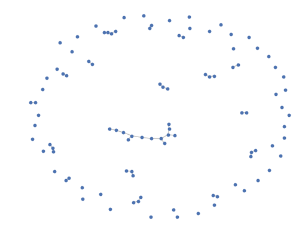
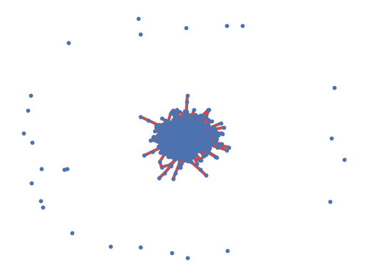
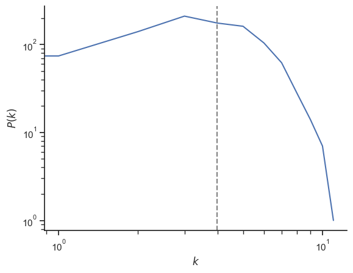
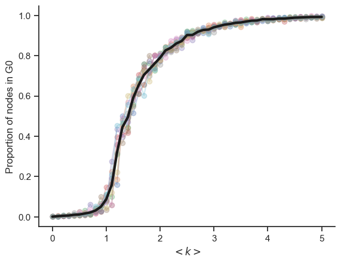
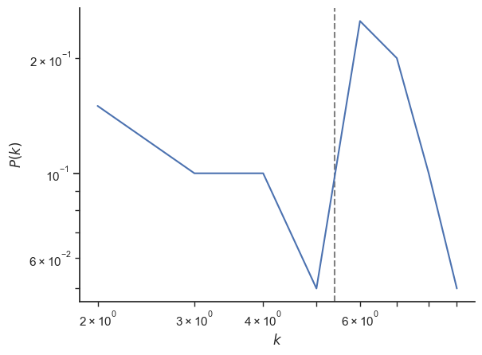
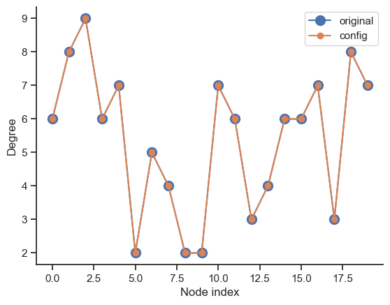
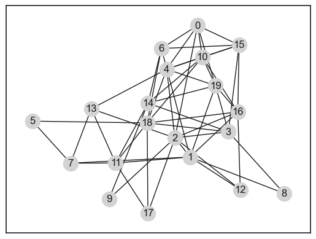
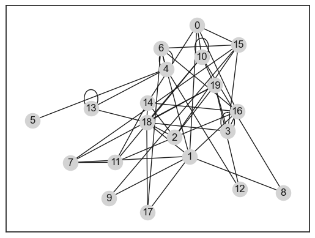

5. Erdos-Renyi random networks#
import random
import networkx as nx
import numpy as np
import seaborn as sb
import matplotlib.pyplot as plt
sb.set_theme(style="ticks", context="notebook")
5.1. Write a random graph generator#
def random_graph(N, p):
G = nx.Graph()
nodes = range(N)
G.add_nodes_from(nodes)
edges = []
for i in nodes:
for j in nodes[:i]:
if random.random() < p:
edges.append([i, j])
G.add_edges_from(edges)
return G
G = random_graph(10, 0.1)
N = 100
p = 0.8 / N
G = random_graph(N, p)
params = {
"node_size": 10,
"with_labels": False,
"edge_color": "silver",
"node_color": "b",
}
nx.draw_networkx(G, **params)
sb.despine(bottom=True, left=True)
plt.show()

5.2. Analyse characteristics#
N = 1000
p = 4 / N
G = nx.erdos_renyi_graph(N, p, seed=1)
params = {
"node_size": 10,
"with_labels": False,
"edge_color": "silver",
"node_color": "b",
}
pos = nx.spring_layout(G)
nx.draw_networkx(G, pos=pos, **params)
# identify largest connected component
Gcc = sorted(nx.connected_components(G), key=len, reverse=True)
G0 = G.subgraph(Gcc[0])
# highlight largest connected component
nx.draw_networkx_edges(G0, pos=pos, width=3.0, edge_color="r")
# draw other connected components
for Gi in Gcc[1:]:
if len(Gi) > 1:
nx.draw_networkx_edges(G.subgraph(Gi), pos, alpha=0.4, width=3.0, edge_color="r")
sb.despine(bottom=True, left=True)

print(f"Connected: {nx.is_connected(G)}")
print(f"# connected components: {len(list(nx.connected_components(G)))}")
print()
print(f"Size of largest connected component: {len(G0)}")
print(f"Prop. of nodes in it: {len(G0) / N:.2f}")
print()
degree_sequence = sorted((d for n, d in G.degree()), reverse=True)
print(f"Average degree: {np.average(degree_sequence)}")
print(f"Clustering coefficient: {nx.average_clustering(G)}")
Connected: False
# connected components: 26
Size of largest connected component: 974
Prop. of nodes in it: 0.97
Average degree: 3.978
Clustering coefficient: 0.0027341269841269842
deg, counts = np.unique(degree_sequence, return_counts=True)
fig, ax = plt.subplots()
ax.plot(deg, counts)
ax.axvline(np.average(degree_sequence), ls="--", c="grey", zorder=-1)
ax.set_xlabel("$k$")
ax.set_ylabel("$P(k)$")
plt.yscale("log")
plt.xscale("log")
sb.despine()

5.3. Vary the degree k#
N = 1000
ks = np.arange(0, 5.1, 0.1)
ps = ks / (N - 1)
n_reps = 10
props_arr = np.zeros((len(ps), n_reps))
for i, p in enumerate(ps):
for rep in range(n_reps):
G = nx.erdos_renyi_graph(N, p)
Gcc = sorted(nx.connected_components(G), key=len, reverse=True)
G0 = G.subgraph(Gcc[0])
prop = len(G0) / N
props_arr[i, rep] = prop
fig, ax = plt.subplots()
ax.plot(ks, props_arr[:, :], "-o", alpha=0.3)
ax.plot(ks, np.average(props_arr, axis=1), "k-", lw=3)
ax.set_ylabel("Proportion of nodes in G0")
ax.set_xlabel(r"$< k >$")
sb.despine()

5.4. Configuration model#
N = 20
p = 6 / N
G = random_graph(N, p)
degree_sequence = [d for n, d in G.degree()]
deg, counts = np.unique(degree_sequence, return_counts=True)
fig, ax = plt.subplots()
ax.plot(deg, counts / N)
ax.axvline(np.average(degree_sequence), ls="--", c="grey", zorder=-1)
ax.set_xlabel("$k$")
ax.set_ylabel("$P(k)$")
plt.yscale("log")
plt.xscale("log")
sb.despine()

G_conf = nx.configuration_model(degree_sequence)
G_conf = nx.Graph(G_conf)
degree_sequence_conf = [d for n, d in G.degree()]
print(G)
Graph with 20 nodes and 54 edges
print(G_conf)
Graph with 20 nodes and 48 edges
deg_conf, counts_conf = np.unique(degree_sequence_conf, return_counts=True)
fig, ax = plt.subplots()
ax.plot(degree_sequence, "o-", ms=10, label="original")
ax.plot(degree_sequence_conf, "o-", label="config")
ax.set_xlabel("Node index")
ax.set_ylabel("Degree")
#plt.yscale("log")
#plt.xscale("log")
ax.legend()
sb.despine()

print(G)
print(G_conf)
pos = nx.spring_layout(G)
pos = nx.spring_layout(G, seed=1)
nx.draw_networkx(G, pos=pos, node_color="lightgrey")

nx.draw_networkx(G_conf, pos=pos, node_color="lightgrey")

#G_conf = G_conf.remove_edges_from(nx.selfloop_edges(G_conf))
pos
{0: array([0.20047498, 0.68928561]),
1: array([ 0.14611836, -0.24670642]),
2: array([ 0.03608725, -0.11064285]),
3: array([ 0.42465229, -0.06698404]),
4: array([-0.0246194 , 0.37842248]),
5: array([-1. , 0.00844082]),
6: array([-0.062711 , 0.52549913]),
7: array([-0.72370023, -0.29077969]),
8: array([ 0.82964333, -0.50513973]),
9: array([-0.44433816, -0.54556328]),
10: array([0.23582442, 0.46413804]),
11: array([-0.39611898, -0.28933171]),
12: array([ 0.51116579, -0.47879731]),
13: array([-0.57260717, 0.09656657]),
14: array([-0.15973125, 0.13676757]),
15: array([0.50249717, 0.55024869]),
16: array([0.49328175, 0.07412928]),
17: array([-0.16110627, -0.64629093]),
18: array([-0.16588655, -0.004293 ]),
19: array([0.33107366, 0.26103078])}